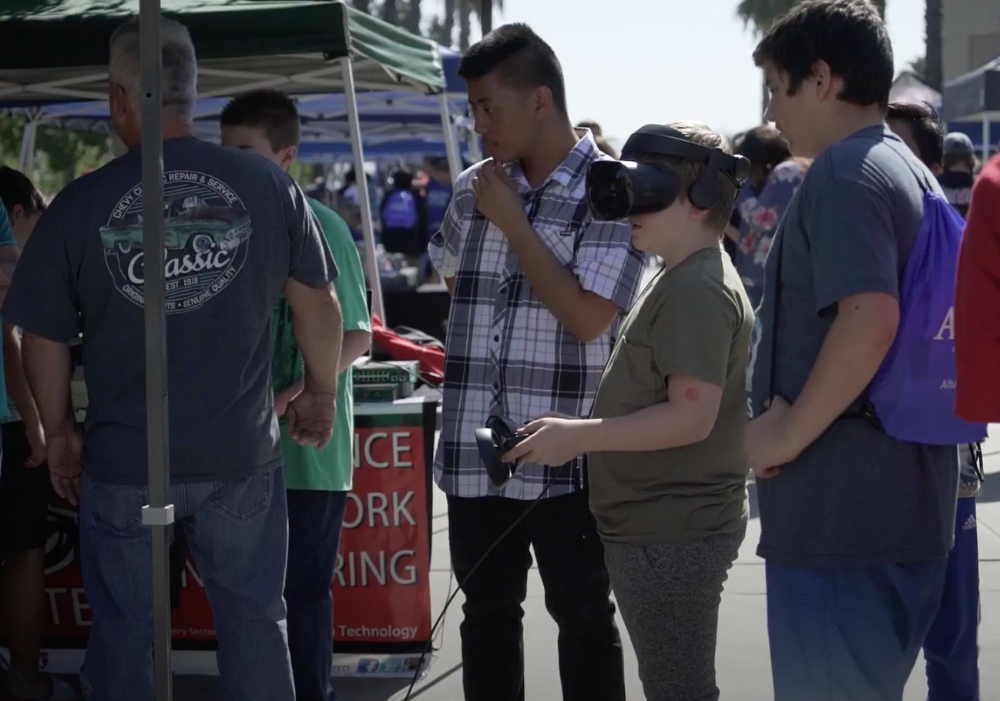
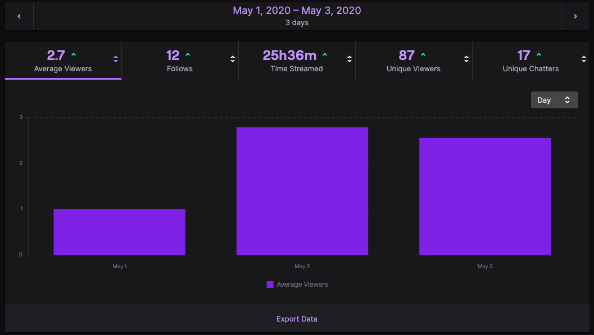

VR Exhibition Night
Event plans for a day-long event that would bring VR exposure to local, marginalized communities.
Team: Brian Kenney (Event Advisor), Emiliano Ambriz (Event Host), Janzen Molina (Event Host)
Background
I am a proponent for educating others about virtual reality technologies and inspiring others to use VR, whether it be for games, for art, or even to develop their own VR applications. I was first motivated to teach VR to others when I volunteered at my local technology expo for my high school computer science teacher. As part of our school's exhibition, we gave students the chance to try out the VR game Beat Saber.
Me teaching and monitoring participants while they try out VR
Source: CNUSD TV
Everyone who tried it out was blown away by how fun and unique the VR experience was. This encouraged me to create opportunities for others to learn about VR, and knowing the resources our school had in the virtual reality space, I felt it would be a perfect opportunity to collaborate with the school and/or district in order to put the plan into action.
Event Report
I first wrote an event report documenting all the information one would need in order to host the event, including a comprehensive schedule and what was needed to run the event smoothly. I made sure to pay attention to minute details such as how we would acquire personnel for parking and how each volunteer would be split into a station with participants. The initial draft was to be reviewed and signed by my computer science teacher at the time (who was acting as our advisor) and revised based on his feedback.
Cancellation and Pivot
Unfortunately, things did not go as expected as in the middle of our planning phase, the COVID-19 pandemic arrived in the United States and shut down our operations indefinitely. Though disheartened, I was not willing to give up the idea of sharing VR to the world. I immediately started devising alternative solutions that would allow us to showcase VR from the safety of our homes. The final project I came up with was a charity Twitch livestream that would be broadcast for 24 hours.
The livestream was done on May 1-3, 2020, and garnered 87 unique viewers while raising awareness for AbleGamers, a nonprofit foundation dedicated to improving accessibility in the video game space, enabling more people with disabilities to be able to play video games. During the stream, I was able to play VR games for about 12 hours in a row while interacting with the viewers as they came and went. I was also able to demonstrate the creation of a Beat Saber map using community-made tools.
Twitch data for the stream
Source: Twitch
Regrettably, no video recording of the livestream was ever saved and the copy of the stream on Twitch was deleted after some time.
Reflection
Although the event did not go as planned and the ensuing alternative was not as widespread as I had hoped, I am still confident in my ability to host a VR education event in the future. One important skill that I learned throughout the entire process was just persevering through the challenges, regardless of whether or not the outcome seemed hopeless. I want to take that determined mentality into my future career and even in my continued pursuit of getting this event up and running for the public.